Valora MUN isn't your average conference—it's where ideas come alive, debates get intense, and connections turn into friendships that last a lifetime. In our first edition, we brought together 200+ delegates from all over, hosted mind-blowing committees, threw killer socials, and did it all with a team that's as passionate as it is fun. We believe in mixing serious diplomacy with energy, creativity, and just the right amount of chaos—because learning should be exciting, not boring. From heated debates to late-night networking, Valora MUN gives every delegate a space to speak boldly, think critically, and make an impact.
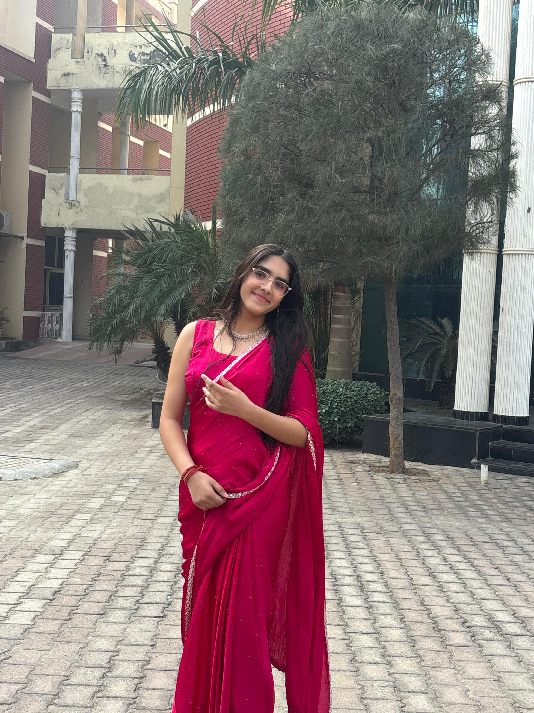
Mahi Yadav
Founder
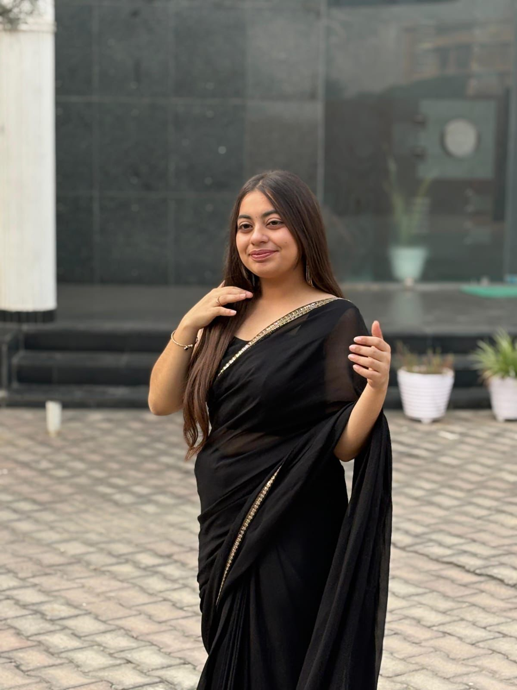
Riya Dang
Co-Founder
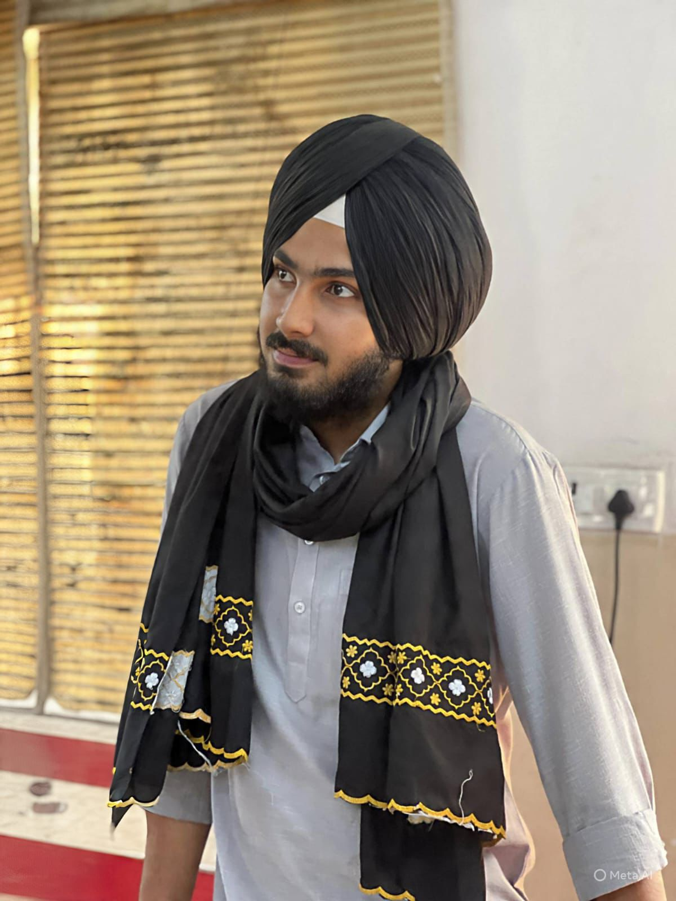
Sarb Sukhdev Singh Judge
Chief Advisor
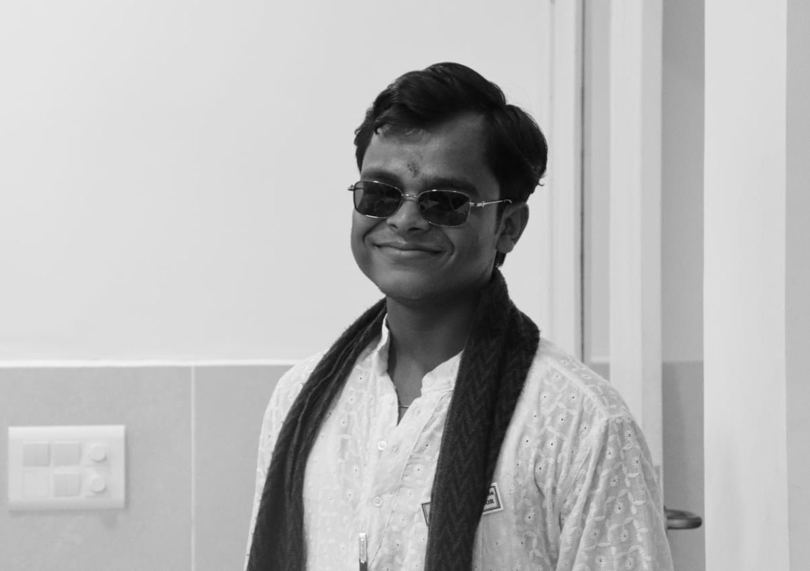
Nimish Bansal
Advisor
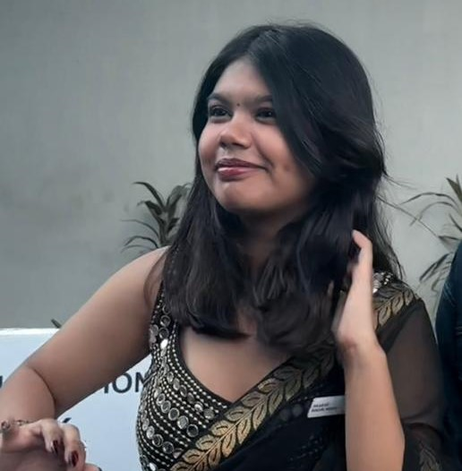
Vichitra Bali
Secretary-General
My experience at Valora MUN 1.0 was overall quite good. As a coordinator who visited the conference, it was nice to see the effort the organising team had put into making the event happen. The committees were engaging and the delegates were actively participating, which created a good debating atmosphere. Although some of the arrangements and logistics could have been better, it is completely understandable considering it was the first edition. Despite that, the Secretariat managed things well and handled situations with dedication. Overall, it was a promising first attempt, and with some improvements in management and planning, Valora MUN definitely has the potential to grow into a much bigger and better conference in the future.
Participating in Valora MUN 1.0 was a truly memorable experience. As a member of the IPC Photography team, I had the opportunity to capture some of the most powerful moments of debate, collaboration, and leadership. The energy, organization, and enthusiasm of the delegates and the executive board made this conference exceptional. I'm proud to have been part of such a well-executed and inspiring event.
Serving as the Deputy Secretariat General at Valora MUN 1.0 was a truly enriching experience. The conference reflected dedication, meaningful discussions, and the enthusiasm of all delegates. I would especially like to appreciate the High Table members for being extremely supportive and ensuring the smooth functioning of the committees. I look forward to seeing Valora MUN continue to grow and inspire young leaders.
Valora MUN 1.0 was a well-organized conference that reflected strong teamwork, thoughtful debate, and the enthusiasm of its delegates. The event successfully created a platform for meaningful discussions and leadership development. I would also like to appreciate the High Table members, who were extremely supportive and ensured that the committees functioned smoothly throughout the conference.
It was an amazing experience portraying Apoorva Mukhija in the Traitors Committee at Valora MUN 1.0. GD Goenka Public School provided a great setup with comfortable seating and an engaging atmosphere. The committee was full of brilliant minds, making every moderated caucus feel intense and strategic. The secretariat members and the EB were very friendly and supportive, guiding us throughout the committee and making the experience truly memorable.
Serving as the Executive Board Member for the Traitors Committee at Valora MUN 1.0 was a truly exciting experience. The committee was filled with energy, engaging discussions, and dynamic tasks that kept the delegates actively involved throughout the session. It was rewarding to see the delegates participate with such enthusiasm and enjoy the unique format of the committee. I am glad that the Traitors Committee stood out as one of the most memorable and engaging committees of the conference.
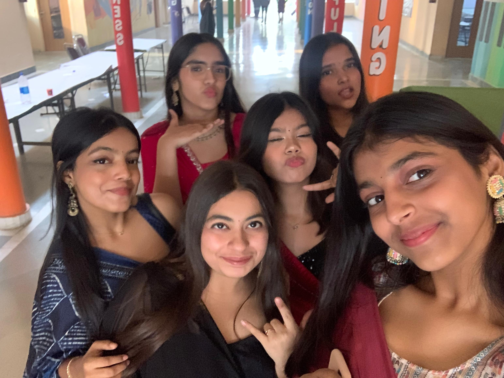
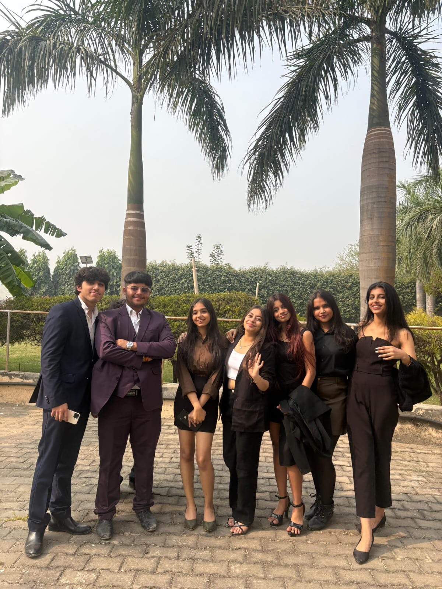
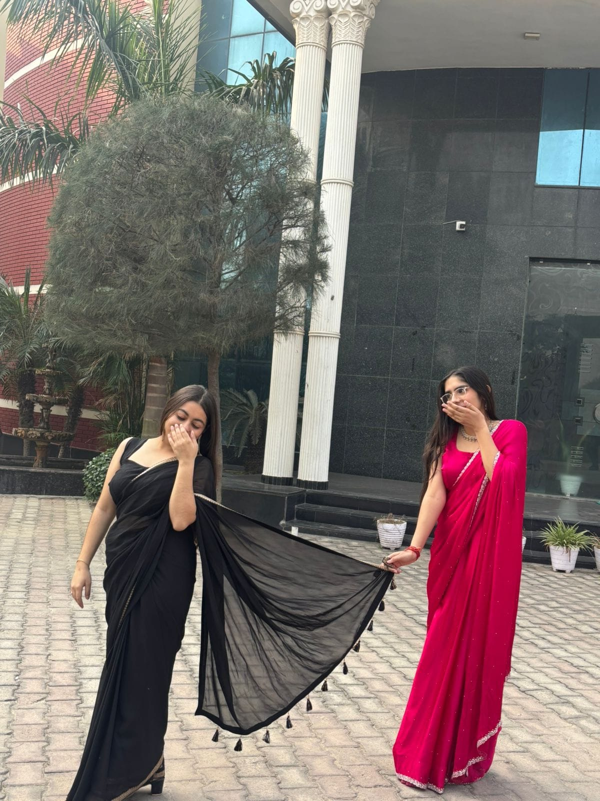
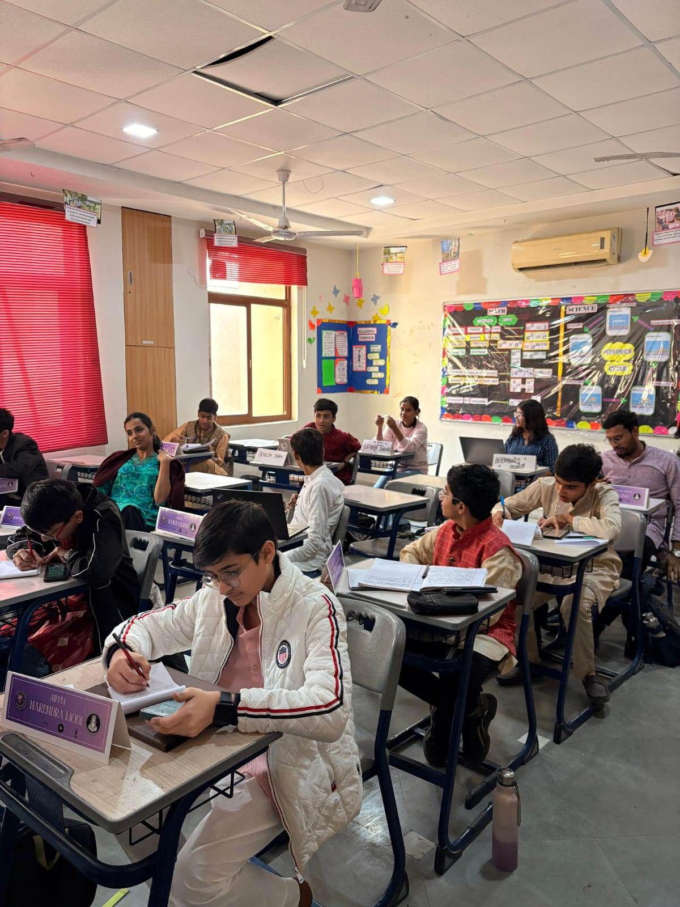
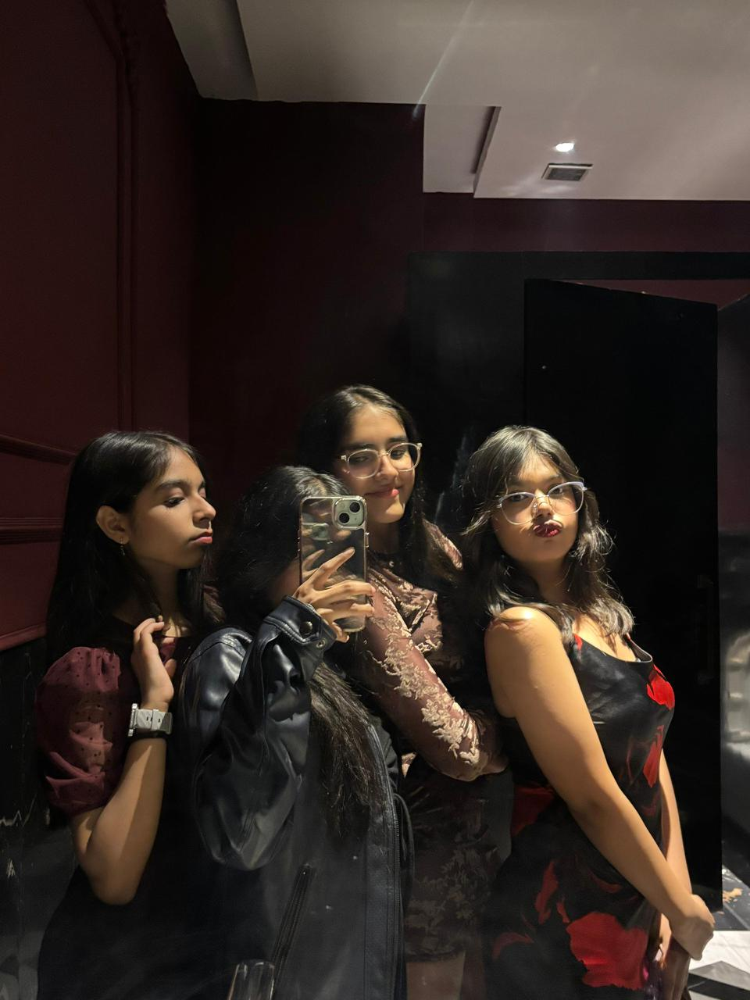
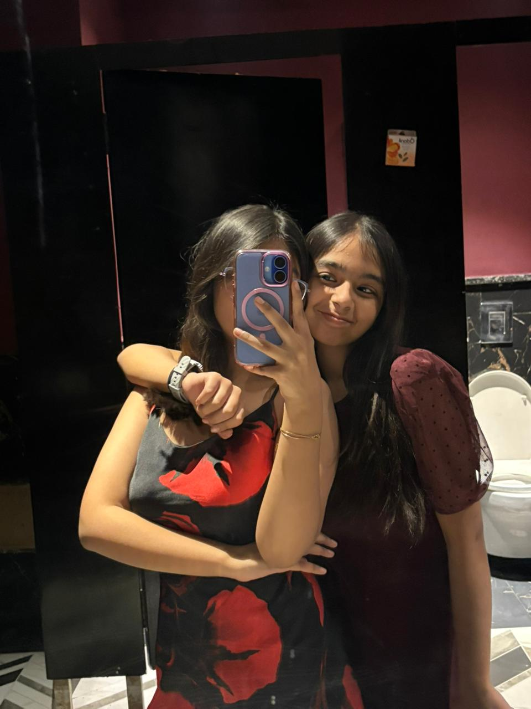
Deliberation on the Regulation of National Security Laws in India with Special Emphasis on UAPA, AFSPA, and Preventive Detention.
Assessing the Erosion of Multilateralism and the Future of the United Nations in a Polarised World Order.
Deliberation on Reproductive Rights, Bodily Autonomy, and State Control Over Women's Healthcare.
Deliberation on the Implementation and Constitutional Validity of the Women's Reservation Act, 2023 with Reference to Delimitation, Federalism, and Electoral Equity.
[ CLASSIFIED ]
Photographers, Journalists, & Caricaturists.
6,500
5,000
4,000
REGISTRATION FEE
(per delegate)